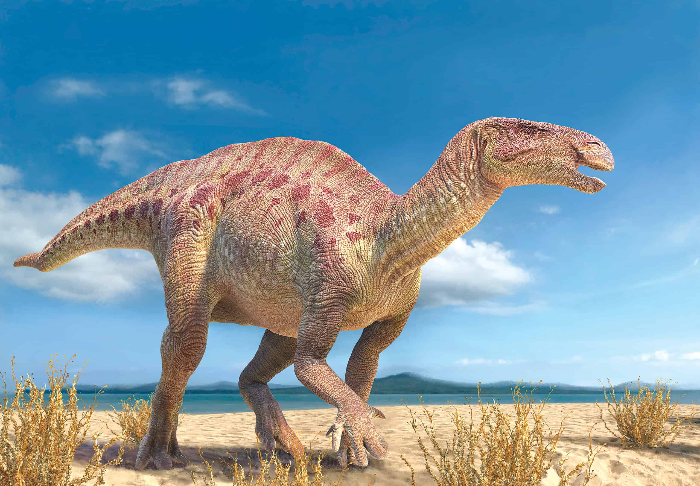
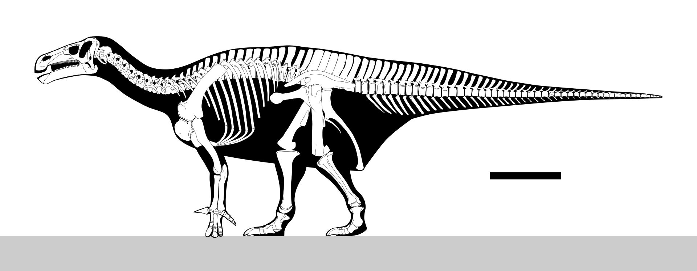

Iguanodon (/ɪˈɡwɑːnədɒn/ i-GWAH-nə-don; meaning 'iguana-tooth'), named in 1825, is a genus of iguanodontian dinosaur.
While many species found worldwide have been classified in the genus Iguanodon, dating from the Late Jurassic to Early Cretaceous,
taxonomic revision in the early 21st century has defined Iguanodon to be based on one well-substantiated species: I. bernissartensis,
which lived during the Barremian to early Aptian ages of the Early Cretaceous between about
126 and 122 million years ago.
Iguanodon was a large, bulky herbivore, measuring up to 9–11 metres (30–36 ft) in length and 4.5 metric
tons (5.0 short tons) in body mass. Distinctive features include large thumb spikes, which were possibly used for defense against
predators, combined with long prehensile fifth fingers able to forage for food.

A rendered picture of an Iguanodon walking in a desert biome

A rendered picture of an Iguanodon skeleton
Areas that Iguanodon have been found:
Belgium
Germany
England
Spain
The genus was named in 1825 by English geologist Gideon Mantell, based on fossil specimens found in England and was given the species name I. anglicus.
Iguanodon was the second type of dinosaur formally named based on fossil specimens, after Megalosaurus. Together with Megalosaurus and Hylaeosaurus,
it was one of the three genera originally used to define Dinosauria. The genus Iguanodon belongs to the larger group Iguanodontia,
along with the duck-billed hadrosaurs. The taxonomy of this genus continues to be a topic of study as new species are named or long-standing ones
reassigned to other genera.